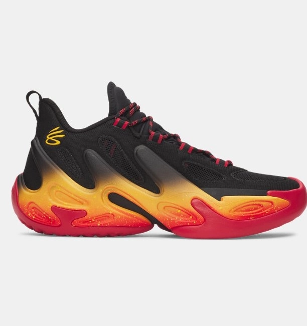

BASKETBOL / ERKEK
Erkek UA Curry 13 Basketbol Ayakkabısı
Süperkritik köpük, yüksek aşınma direncine sahip UA Flow, SPLASH kafes yapısı ve Pebax denge bileşeninin birleşimi; eşsiz bir zemin tutuşu, patlayıcı hamle yeteneği ve durdurulamaz kontrol sağlar. Bu modelin sunduğu teknolojik üstünlük, profesyonel standartları karşılayacak seviyededir.
Beden / Numara Seçimi
Ürün Özellikleri
- Ayağı saran hafif ve esnek üst yüzey, SPLASH kafes yapısı sayesinde ayağı kavrayarak hareketlerinize sarsılmaz bir denge katar.
- Esnek Pebax çerçeve, kontrolü tamamen elinizde tutarak daha hızlı ve çevik hareket etmenize yardımcı olur.
- Özel köpük orta taban ve UA Flow dış taban; sahada üstün bir esneklik, dayanıklılık ve yere sağlam basma hissi verir.